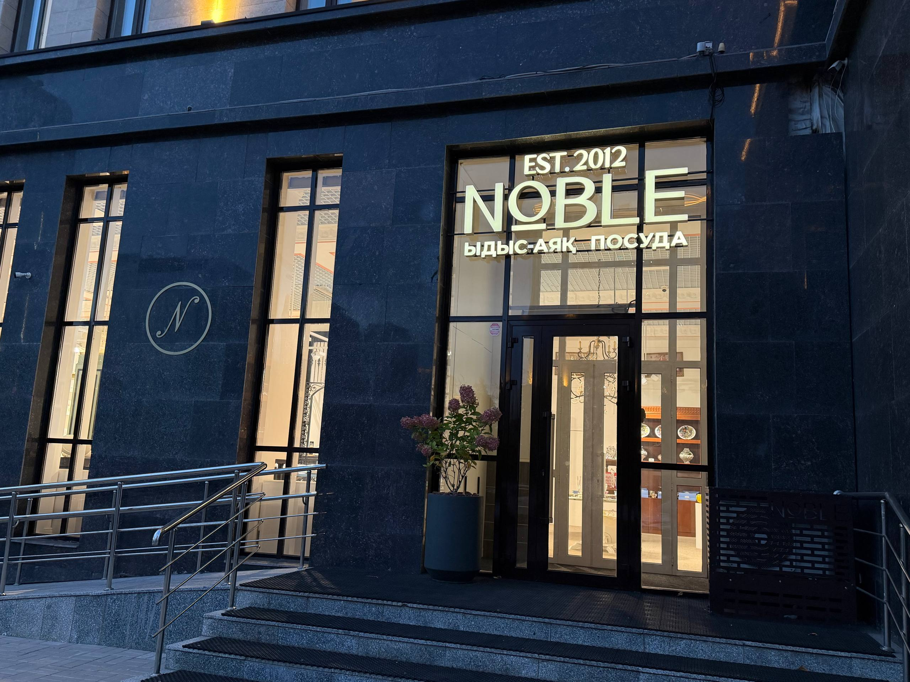
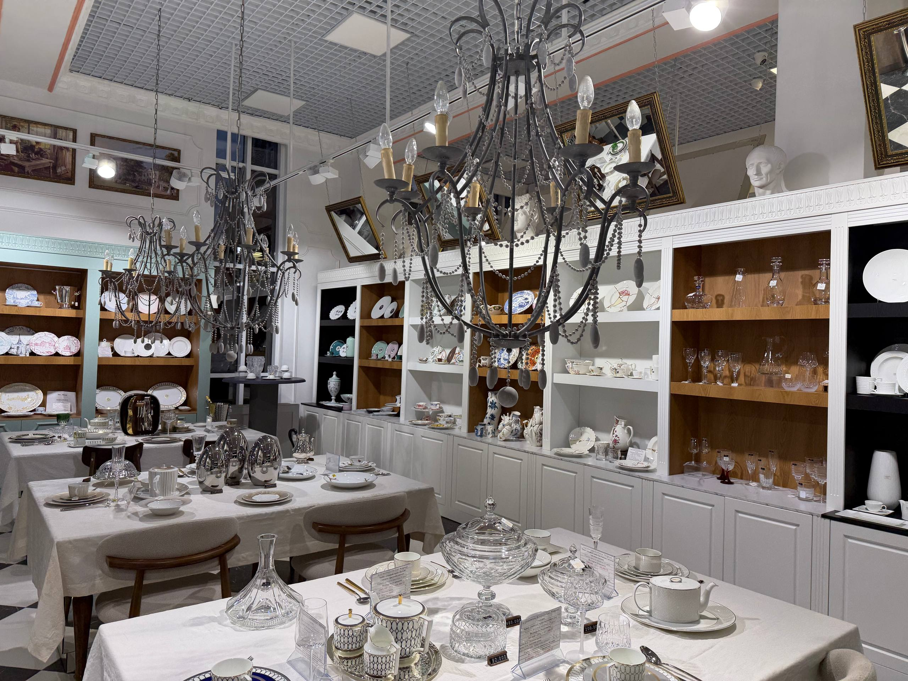
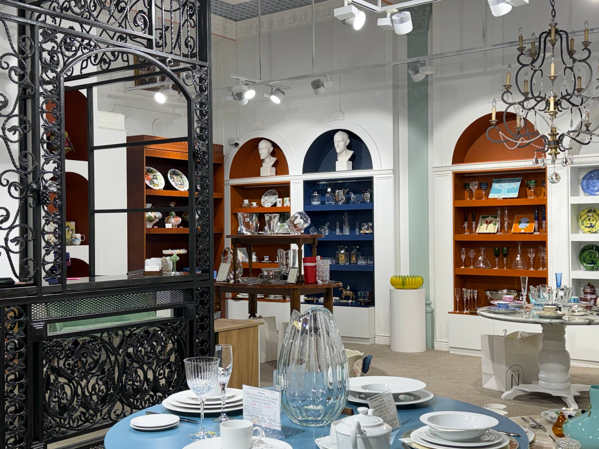

About Noble
This is a tableware store where you can enjoy beautiful views while selecting tableware for yourself or as a gift. Everything in the store looks very aesthetically pleasing and is thoughtfully arranged.
The walls are adorned with mirrors and various beautiful medieval-style paintings. There are different shelves where everything is arranged beautifully, elegantly, and by theme; the tableware matches each other, meaning the pieces complement one another. The store has a wide variety of unique plates, glasses, and so on. What I liked most was the shelf with a mirror displaying cups and plates featuring floral patterns in a combination of blue, pink, and green. There’s also a glass shelf with a nautical theme, as well as various fruit-themed sets—like lemon sets—and the assortment includes sets with statues, animals, and items inspired by ancient times. Everything there looks expensive and luxurious.
The consultants and salespeople are very knowledgeable—you can tell they’re professionals. Noble is a really cool place where you can admire and buy tableware, especially for those who love tableware or collect it.


